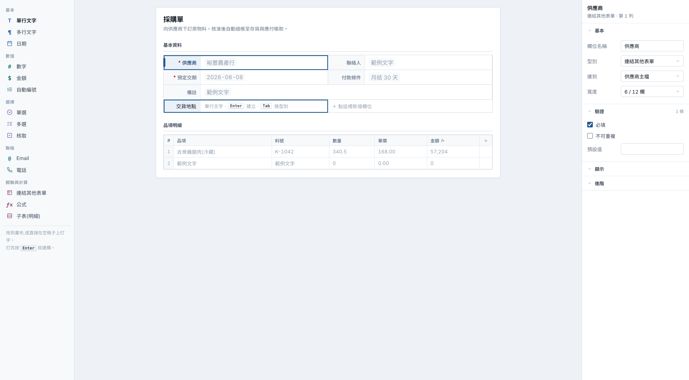
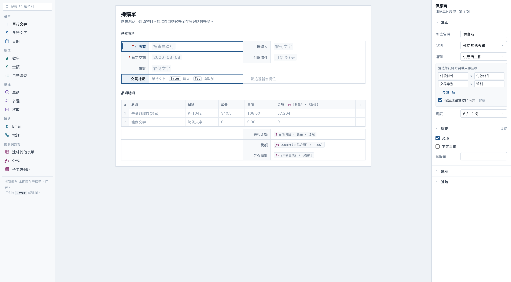

來源:決策方的「2D 表單設計器 v3」提案。整包移植已退回(它連殼一起帶進來,見
docs/39 §5);本頁只處理值得吸收的三條,做進 weyver-v2 既有的設計器。
範式不動 —— 打字建欄、左名右值、兩速儲存三條有 Ragic 官方逐字支撐,不跟著 v3 反過來。


| 項目 | 改前 | 改後 | 為什麼 |
|---|---|---|---|
| ① 公式上畫布 | 子表表頭只有一個 ƒx 記號;沒有合計區 |
表頭 ƒx {數量} * {單價};合計三欄靠右堆疊,各自顯示式子 |
只放記號等於要使用者記住算式。式子用我方語法 {欄名} —— 畫布上長什麼樣,公式編輯器裡就打什麼 |
| ② 元件庫搜尋 | 平鋪 13 列,無搜尋 | 頂部搜尋框,placeholder 標明「31 種型別」 | 型別實數 31(field-type-registry)。13 種還能掃,31 種要捲;分組本身不會告訴你總量 |
| ③ 帶入對映 | 只有「連到 供應商主檔」 | 「選這筆記錄時要帶入哪些欄」+ 來源→目標兩組 + 保留當時內容 | 選了一筆之後畫面多出兩個值,不講的話使用者不知道哪來的 |
Σ 品項明細 · 金額 · 加總 與 ƒx ROUND({未稅金額} * 0.05) 長得不一樣,是因為
在我方引擎裡它們本來就是兩種型別 —— rollup 是設定(選子表 + 選欄 + 選加總),
formula 才是運算式。v3 把兩者都寫成 SUM(ITEMS.小計),
那會把一個不用寫程式的功能偽裝成要寫程式的,正好踩到第一約束。
OQ-FDW-1=A);計算欄的值來自
設計期還不存在的資料,填一個 57,204 是雙重的假。式子才是這格真正的定義。
ROUND({未稅金額} * 0.05)(169px)都放不下。
挑一條剛好塞得下的式子等於讓 mockup 說謊 —— 真實公式比範例長。
改成單據本來的做法後值格 298px,順便對上了台灣單據的版面。
mst_vendor / vendor_no / pay_term。
給不寫程式的人看資料庫名稱是第一約束違規,所以這裡只出現表單名與欄位名。field-settings.tsx:557「選這筆記錄時要帶入哪些欄」、
advanced-options.tsx:135「保留填單當時的內容(建議)」——
設計器文案不出現 live / snapshot / syncMode(field-types-parity v1.1 逐字)。
ragic doc/37)、
「建立欄位時,預設會是自由輸入型式」(doc/27)→ 先命名後定型,不是先拖型別doc/37)
→ 維持左名右值的框線格,不改成上名下值卡片OQ-FD2-2:layout 走草稿、結構性 DDL 即時)。
v3 的「已儲存 10:12」對一半的操作是假的 → 維持「3 項未套用」
對照用,決策後即失效。權威稿 weyver-v2.html;完整分析見 docs/39 §5。
截圖為 #s-design .fd-body,device scale。